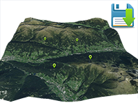

Example of runtime saving 3D markers to PlayerPrefs, and loading of 3D markers from PlayerPrefs.
Requirement: 3D Control
Usage instructions:
Add this script to map GameObject.
Add this script to map GameObject.
SaveMarker3DExample.cs
/* INFINITY CODE 2013-2016 */
/* http://www.infinity-code.com */
using UnityEngine;
namespace InfinityCode.OnlineMapsExamples
{
[AddComponentMenu("Infinity Code/Online Maps/Examples (API Usage)/SaveMarker3DExample")]
public class SaveMarker3DExample : MonoBehaviour
{
/// <summary>
/// Key in PlayerPrefs
/// </summary>
private static string prefsKey = "markers";
/// <summary>
/// Prefab of the marker
/// </summary>
public GameObject markerPrefab;
/// <summary>
/// Scale of the markers
/// </summary>
public int markerScale = 20;
private void OnGUI()
{
if (GUI.Button(new Rect(5, 5, 100, 30), "Save markers"))
{
// Save markers to PlayerPrefs
SaveMarkers();
}
}
/// <summary>
/// The event, which is called when the user clicked on the map.
/// </summary>
private void OnMapClick()
{
OnlineMapsControlBase3D control = OnlineMapsControlBase3D.instance;
// Create new marker
OnlineMapsMarker3D marker = control.AddMarker3D(control.GetCoords(), markerPrefab);
marker.scale = markerScale;
}
/// <summary>
/// Saves markers to PlayerPrefs as xml string
/// </summary>
private static void SaveMarkers()
{
// Create XMLDocument and first child
OnlineMapsXML xml = new OnlineMapsXML("Markers");
// Appands markers
foreach (OnlineMapsMarker3D marker in OnlineMapsControlBase3D.instance.markers3D)
{
// Create marker node
xml.Create("Marker", marker.position);
}
// Save xml string
PlayerPrefs.SetString(prefsKey, xml.outerXml);
PlayerPrefs.Save();
}
/// <summary>
/// Use this for initialization
/// </summary>
private void Start()
{
// Try load markers
TryLoadMarkers();
// Subscribe to OnMapClick event
OnlineMapsControlBase.instance.OnMapClick += OnMapClick;
}
/// <summary>
/// Try load markers from PlayerPrefs
/// </summary>
private void TryLoadMarkers()
{
// If the key does not exist, returns.
if (!PlayerPrefs.HasKey(prefsKey)) return;
// Load xml string from PlayerPrefs
string xmlData = PlayerPrefs.GetString(prefsKey);
// Load xml document
OnlineMapsXML xml = OnlineMapsXML.Load(xmlData);
// Load markers
foreach (OnlineMapsXML node in xml)
{
// Gets coordinates
Vector2 position = node.Value<Vector2>();
// Create marker
OnlineMapsMarker3D marker = OnlineMapsControlBase3D.instance.AddMarker3D(position, markerPrefab);
marker.scale = markerScale;
}
}
}
}